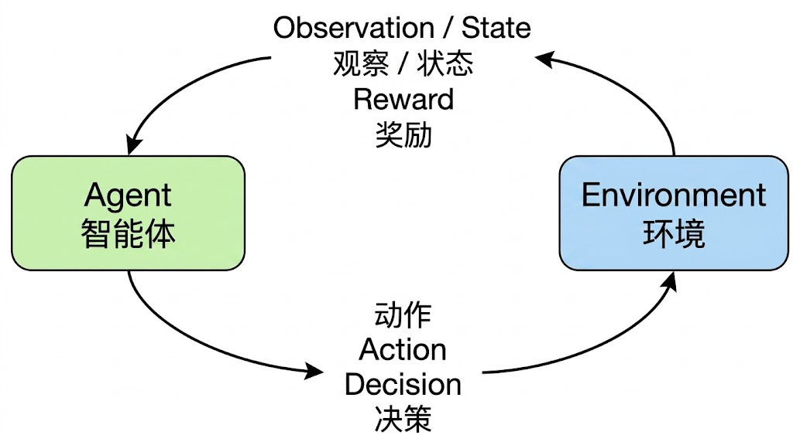
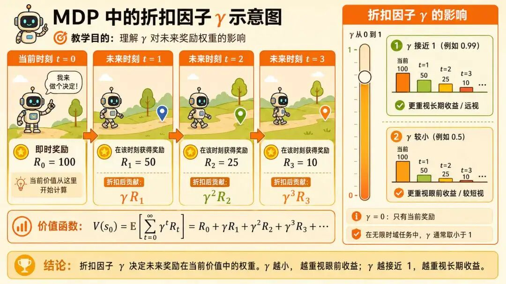
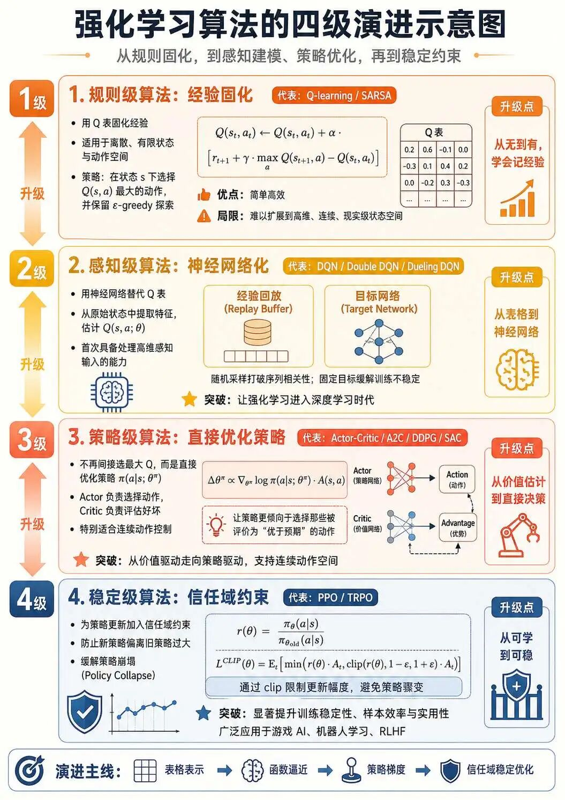

"要成为一颗扎得牢的'钉子'——垂直的知识深度决定不可替代性，横向的广度提供连接可能。"——腾讯Robotics X实验室主任张正友
这是本系列关于强化学习的最后一篇。在前面的多篇文章中，我们陆续讨论了 RL 的核心算法与具体技术细节。本篇则回到更高的层级，对整条主线进行一次系统的梳理与收束，从强化学习与深度学习的本质区别，到各类算法背后共同的思想骨架，完成本主题的整体收官。
在展开各种细节对比之前，先抓住一个最根本的差异：深度学习是"被动的"，强化学习是"主动的"。
DL 是一个观察者：数据已被准备好摆在面前，模型只负责从中学习内在规律，自身并不参与数据的生成过程。
RL 则是一个行动者：智能体必须主动作出决策、与环境交互、并根据环境反馈持续修正自身，其训练数据由智能体自身的行为序列产生。
这一"被动 vs 主动"的根本差异，是后续所有具体对比（目标、数据、训练、泛化）的总根源。下面每一项，本质上都是这一根本差异在不同维度上的展开。
深度学习的目标在于学习数据的内在模式，以实现预测和分类的目的，它所面临的问题一般都是静态问题，如图像识别和文本生成。深度学习经过训练得到的产物本质是一个具有较多参数的网络"函数"。
而强化学习的目标在于学习"策略"以最大化长期累积的奖励，使得智能体在复杂动态的环境中能够做出最优动作。它所面临的任务都是动态的，如自动驾驶等。强化学习经过训练得到的产物本质是一套"策略"，即在给定的状态下做出相应动作的规则。
深度学习的数据一般要经过爬取、清洗、整理等一系列的处理。一个 AI 算法工程师在项目流程中超过 70% 的时间都在处理数据，可见高质量的数据对于深度学习是多么重要。
而强化学习的数据则直接通过与环境交互得到（状态-动作-奖励）三元组，相比深度学习省去了大量的人工标注与清洗工作（当然，仍然可能需要奖励整形、状态归一化等处理），并且与深度学习一样可以反复采样使用。
深度学习训练以最小化损失函数为目标，基于预设网络结构，通过前向传播输出预测值，再通过反向传播结合梯度下降更新参数，直至模型收敛。
而强化学习训练以最大化累积奖励为目标，基于环境交互，通过探索-利用平衡生成经验数据，再结合时序差分或策略梯度更新策略，直至策略收敛。
但比训练流程更值得关注的，是两者学习信号本质上的差异：
由此带来一个根本性难题：功劳分配/信用分配（Credit Assignment），这 100 步里，到底是哪几步走错了？哪几步走对了？这就是为什么 RL 比 DL 训练更难、波动更大、对调参更敏感的根本原因，也是后面几乎所有算法设计的核心动机。
另一个让 RL 训练更为复杂的根源，在于目标函数的可微性。DL 的损失函数（如交叉熵、均方误差）对模型参数直接可微，可通过反向传播 + 梯度下降高效优化。而 RL 真正的优化目标：”累积奖励的期望”，对策略参数并不直接可微：动作选择往往是离散采样过程，环境动力学也通常是一个不可微的黑盒。
这正是 RL 必须发展出策略梯度、时序差分（TD）、重要性采样等一系列特殊技巧的根本原因，它们的本质都是在回答同一个问题：目标不可微时，如何获得有效的梯度估计？
DL 和 RL 都追求"泛化能力"，但泛化的对象不同：
这一差异看似细微，但工程含义大不相同。DL 的泛化压力主要落在数据多样性上；而 RL 的泛化压力还须同时面对状态空间的爆炸与环境动力学的不一致，这也是 RL 系统从仿真环境迁移到真实物理系统（尤其是真实机器人）时面临的核心挑战，业界通常称之为 sim-to-real 问题。
把上面所有的差异落地到一个具体场景：下围棋，你会立刻看到 DL 和 RL 的本质区别。
DL 教会机器"模仿人类下棋"，其上限受限于人类专家的水平；RL 教会机器"自行探索好棋"，其上限取决于问题本身的最优解。这正是强化学习的独特价值所在。
强化学习和深度学习并不是完全割裂的，两者经常协同工作，形成了深度强化学习（DRL） 这一融合范式。
一方面，强化学习在处理高维度状态（如图像、语音）时，可以借助深度学习构建神经网络，将原始状态映射为低维特征，使强化学习能够处理复杂输入。比如我们之前学习的 DQN，就是采用 CNN 解析游戏画面，输出动作价值（Q 值）；AlphaGo 则用 CNN 评估围棋棋盘状态，结合蒙特卡洛树搜索制定策略。
另一方面，深度学习在处理某些标注难度极大、成本极高的任务时，可以借助强化学习构建长期奖励目标。比如 ChatGPT 的 RLHF 训练，就是用人类反馈作为奖励信号来微调语言模型，对齐输出偏好。
自动驾驶则是一个典型的端到端融合案例：深度学习处理传感器数据完成环境感知，强化学习规划路径完成动态决策，两者缺一不可。
前面所讨论的算法虽然形态各异，但都建立在同样几块核心概念之上。本节回到这些最基本的概念，把它们重新串成一张完整的认知地图，便于读者从更高的视角审视整个 RL 框架。

这个五要素闭环框架之所以普适且强大，是因为它具备三个核心特质：高度的抽象性让它能够剥离具体问题域（游戏、机器人、金融、推荐系统等）的细节，用通用概念描述任何交互式决策问题；内在的学习机制使得不同算法可以定义不同的策略表示形式和更新方法；自洽的优化目标：最大化累积奖励，为整个学习过程提供了清晰的方向。
强化学习的整个数学框架，建立在一个看似简单但极其重要的假设上：马尔可夫性，未来的状态只取决于当前状态和当前动作，与历史无关。
举例说明：下国际象棋时，棋盘上的当前局面已经包含了继续推演所需的全部信息，历史的每一步走法都已"凝固"在当下的格局中，无需回溯。这就是马尔可夫性。
它的好处是显著简化了问题，智能体不必维护整段历史信息；代价是当问题本身不天然具备这一性质时（如金融市场，昨日的走势会影响今日的市场情绪），需要将足够多的历史信息编码进当前状态中以近似满足马尔可夫性。"如何设计状态表示"在 RL 工程实践中之所以常常成为核心问题，根源正在于此。
后面公式里频繁出现的 γ（取值通常在 0.9 到 0.99 之间），叫做折扣因子。它的作用是给未来的奖励"打折”，10 步之后才拿到的奖励 $r$，在当下被视为 $γ^{10} \cdot r$。
为什么要打折？两个原因：

γ 越接近 1，智能体越 "远视”，倾向于为长期收益牺牲短期回报；越接近 0，智能体越 "近视”，只关注眼前的即时奖励。γ 的具体取值，本身也是 RL 工程中的一个关键超参数。
这两个概念是几乎所有 RL 算法的核心，但二者常被混淆。一句话区分：
两者的关系是：评判者评估了所有动作的好坏，决策者就可以"挑最好的做"。所以最早的 Q-learning 只学评判者，决策直接靠"选 Q 值最大的"那个动作就行；
而后来的 Actor-Critic 干脆把两者都显式建模，让决策者和评判者各司其职，这正是下面四级演进背后的核心线索之一。
理清核心概念之后，我们再回过头审视整条算法演进的脉络，前面所讲过的算法，本质上是围绕"闭环"框架不断升级的过程。可以将主流算法归纳为四个层级，每一层都对应了对前一层瓶颈的针对性突破。

规则级算法的核心思想，是在基础闭环框架上利用表格"固化"经验。它适用于状态和动作都是离散且有限的场景，代表算法是 Q-learning 和 SARSA。
其策略形式十分简单：在状态 $s$ 下，选择 Q 值 $Q(s,a)$ 最大的动作，并通过 ε-greedy 等机制保留一定的探索性。每一次交互 $(s_t, a_t, r_{t+1}, s_{t+1})$ 都用于更新 Q 表，通过贝尔曼方程迭代：
$$ Q(s_t, a_t) \leftarrow Q(s_t, a_t) + α \cdot [r_{t+1} + γ \cdot \max_a Q(s_{t+1}, a) - Q(s_t, a_t)] $$随着经验积累，Q 表逐渐逼近真实价值函数，基于 Q 表导出的策略也随之提升。这一层级简洁高效，但局限明显，它只能处理小规模的离散问题，一旦状态空间扩张到现实级别（如图像、连续控制），表格表示就难以维持。
当状态变为高维连续输入（如游戏画面、传感器数据）时，表格表示彻底失效。感知级算法的关键突破在于用神经网络替代 Q 表，通过 CNN 等函数逼近器，直接从原始状态中提取特征并估计价值 $Q(s,a; θ)$。代表算法是 DQN，及其变种 Double DQN、Dueling DQN。
DQN 引入了两个关键技术来稳定训练：经验回放把交互经验存入记忆库再随机采样，打破了数据的序列相关性；目标网络使用一个参数更新较慢的副本来计算目标 Q 值，固定目标一段时间，解决了学习目标动态变化的问题。
通过最小化预测 Q 值与目标 Q 值的均方误差，神经网络参数 $θ$ 由反向传播完成更新。这一层级使强化学习首次具备了对原始感知输入的处理能力，是深度强化学习的开端，也是 DeepMind 在 Atari 系列游戏上取得突破性成果的关键。
DQN 虽然强大，但本质上仍是通过"选取最大 Q 值"间接推导动作，无法处理连续动作空间（如机器人关节的连续转角，无法对动作空间穷举求极值）。策略级算法的关键突破是直接参数化并优化策略 $π(a|s; θ^π)$ 本身，承担这一角色的网络称为 Actor（执行者），通常搭配一个用于价值估计的 Critic（评估者）。代表算法是 Actor-Critic、A2C、DDPG、SAC 等。
它的更新逻辑是：Critic 评估当前策略的表现，给出价值估计（如优势函数 $A(s,a) = Q(s,a) - V(s)$）；Actor 根据 Critic 提供的信号，通过策略梯度更新自身参数：
$$ Δθ^π \propto \nabla_{θ^π} \log π(a|s; θ^π) \cdot A(s,a) $$其直观含义是：让策略更倾向于选择那些被 Critic 评价为"优于预期"的动作。Critic 自身则通过 TD 误差等方法持续更新其价值估计。这一层级特别适合连续动作的控制任务，如机器人步态、机械臂抓取，且训练通常比纯价值方法更为稳定。Actor-Critic 也由此成为当前最主流的算法范式之一。
策略级算法存在一个棘手的问题：若策略更新步长过大，新策略可能严重偏离旧策略，导致性能急剧崩溃且难以恢复，这一现象称为策略崩塌（Policy Collapse），是策略梯度算法长期面临的核心难题。稳定级算法的核心创新，是为策略更新引入"信任域（Trust Region）"约束，确保每一次更新都被限制在一个可控范围内。代表算法是 PPO 和 TRPO。
PPO 的核心设计如下：它首先定义重要性采样比 $r(θ) = π_θ(a|s) / π_{θ_{old}}(a|s)$，再构造一个裁剪后的目标函数（Clipped Surrogate Objective）：
$$ L^{CLIP}(θ) = E_t [\min(r(θ) \cdot A_t,\ \text{clip}(r(θ), 1-ε, 1+ε) \cdot A_t)] $$其中 clip 操作将 $r(θ)$ 限制在 $[1-ε, 1+ε]$ 区间内。
当某动作的优势 $A_t > 0$（优于预期）时，该机制限制策略不要过度增加该动作的概率；当 $A_t < 0$（劣于预期）时，则限制策略不要过度减少其概率。
如此一来，即便采用较大学习率，也能有效避免灾难性的策略崩塌。TRPO 的思路与之类似，只是采用了更为严格的 KL 散度约束。
这一层级显著提升了训练的稳定性、样本利用效率与最终性能。PPO 也因此成为目前最为流行和实用的深度强化学习算法之一，在游戏 AI、机器人学习以及 RLHF（大语言模型对齐技术）等领域均有广泛应用。
从规则级到稳定级，我们已沿"能力进化"这条主线把主流算法系统串联了一遍。但读者也会发现，前述讨论中的部分算法（典型如 AlphaGo）并不能被简单地归入上述四级中的某一级。
这是因为"四级演进"只是观察 RL 算法的一个角度，它回答的是"算法能力的覆盖范围"这一问题。在实际的研究与工程实践中，还常从另外两个维度对算法进行分类。理解这两个维度，RL 算法的整体图谱才算真正完整。
这两个维度与前述四级演进并不冲突，更像是为算法附加的"分类标签"：
回到本文开篇的对比：强化学习与深度学习，一个学策略、依靠稀疏延迟的奖励信号试错；一个学函数、依靠密集精确的标签监督。但在深度强化学习的框架下，两者又彼此成就，深度学习为强化学习提供了对高维感知输入的处理能力，强化学习则为深度学习引入了面向长期目标的优化范式。理解这一层关系，也就理解了当下许多前沿 AI 系统（从 AlphaGo 到 ChatGPT）的底层骨架。
而强化学习自身的全景图，可以概括为：
若要寻找一条能将所有算法贯穿始终的线索，那便是本文反复强调的核心难题，功劳分配（Credit Assignment）。每一级算法，本质上都是在用更精巧的方式回答同一个问题：在这一连串动作中，功劳与过错究竟应当如何被分摊到每一步上？ 从 Q 表的逐格更新，到 Critic 的优势估计，再到 PPO 的谨慎裁剪，皆是这一难题在不同层面上的解法。
至此，关于强化学习的核心内容，本系列已经完整地讨论完毕。
从 Q-learning 的表格迭代，到 DQN 的神经网络逼近，到 Actor-Critic 的策略-价值协同，再到 PPO 的信任域约束，RL 算法演进的整条脉络，至此应当已经清晰。每一层升级所应对的具体瓶颈、每一种设计背后的核心动机，也都可以在前述的"功劳分配"主线下找到自己的位置。
回想这个系列开篇时所说的那句话，AI 离我们并不远，门外汉也能学。能与每一位读者一同走到这一步，把这些原本看似遥远的算法系统地梳理一遍，对我自身也是一次重要的沉淀。这一路，感谢你的陪伴。
强化学习的世界仍在快速演进：RLHF 正推动大语言模型与人类偏好实现对齐，具身智能正让机器人真正进入物理世界，多智能体协作、离线强化学习、世界模型等方向也都在持续展开新的可能性。希望本系列的内容，能为你后续正式学习更高难度的算法知识，打下一个可靠的认知地基。
接下来，我还会继续探索 AI 的其他领域。无论走到哪里，愿这个系列的名字：
门外汉学 AI，不用怕。
始终能为你提供一份继续前行的从容与底气。我们，下一个主题再见！